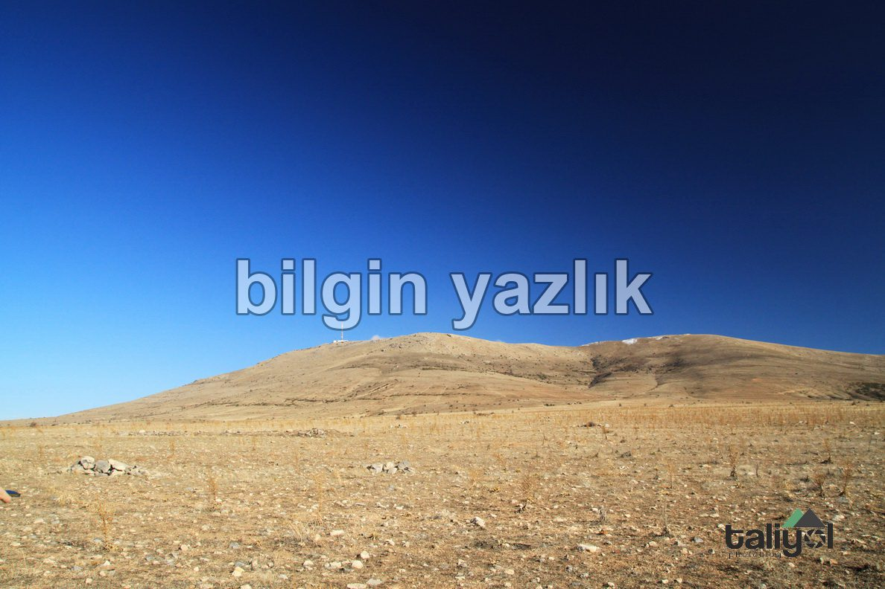
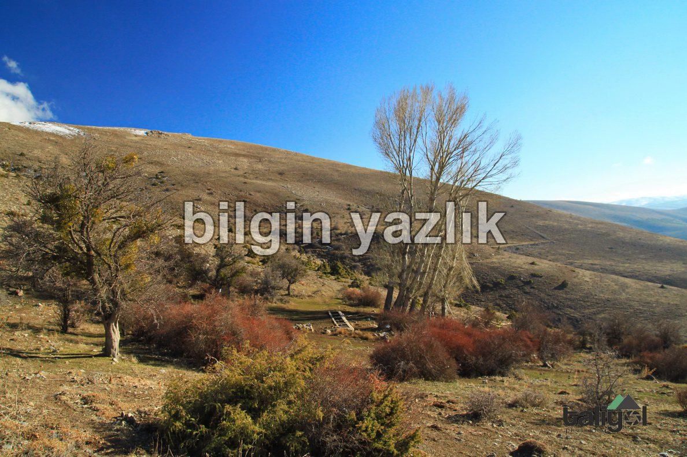
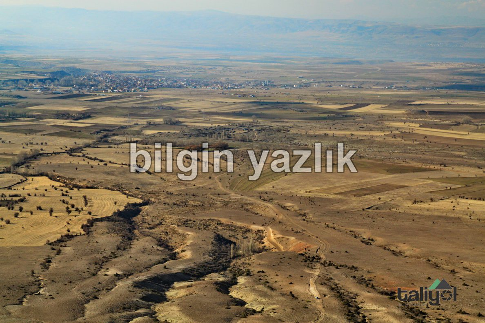
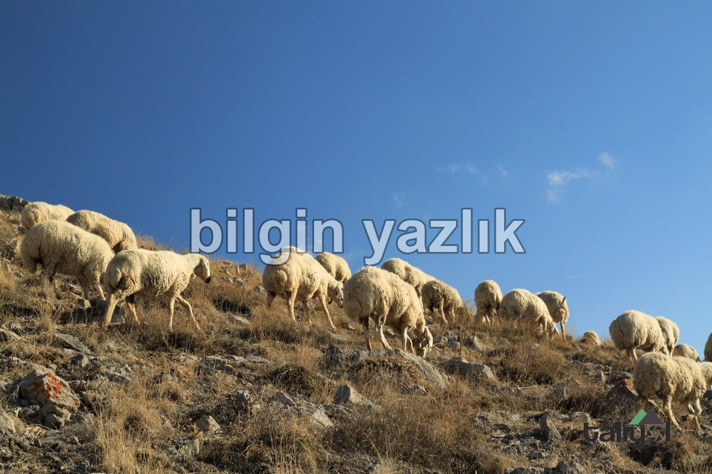
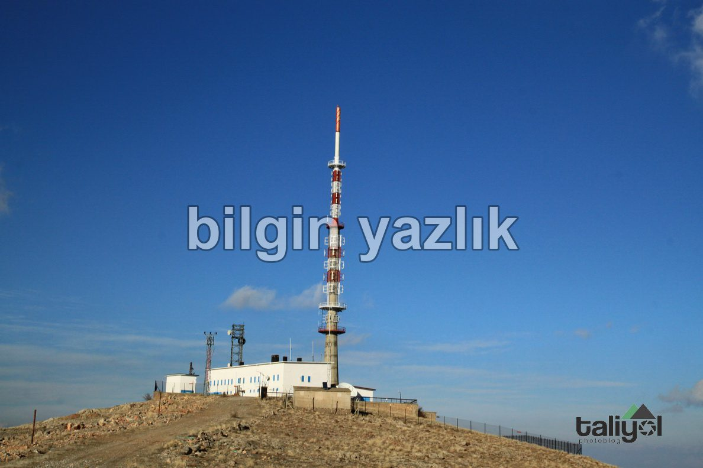
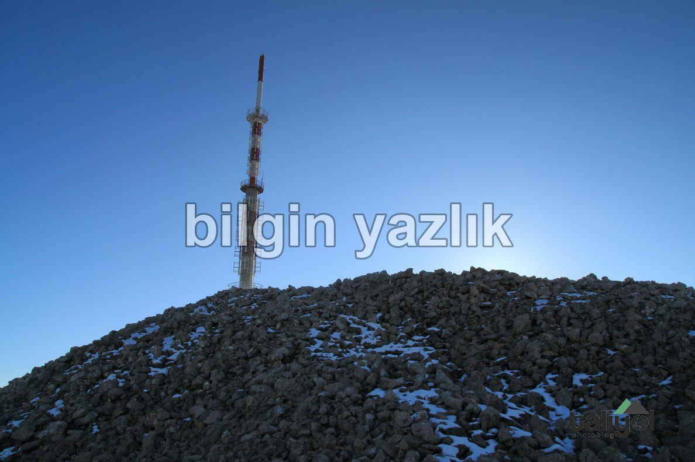

Kayseri & Koramaz · 13 Ocak 2018
Koramaz Dağı
Kayseri’nin Kuzey Doğusunda yükselen bu dağ, Bünyan ile Subaşı arasında yer alıyor ve dağın zirvesinde TRT vericisi yer alıyor.
Dağın batı yüzeyinde Keşler Söğüdü adıyla bilinen bir tatlı su kaynağı yer alıyor.
Dağın zirvesine kadar TRT vericisi için bir yol bulunuyor, araç ile çıkabilirsiniz.
Zirveden, şehir müthiş görünüyor ve rakım 1.900 mt.
Verici istasyonunda her zaman en az iki kişi bulunuyor.
Dağın zirvesinde muhtemelen daha önce soyulmuş bir de Tümülüs yer alıyor.






Bu yazı taliyol arşivinden taşınmıştır. · özgün kayıt